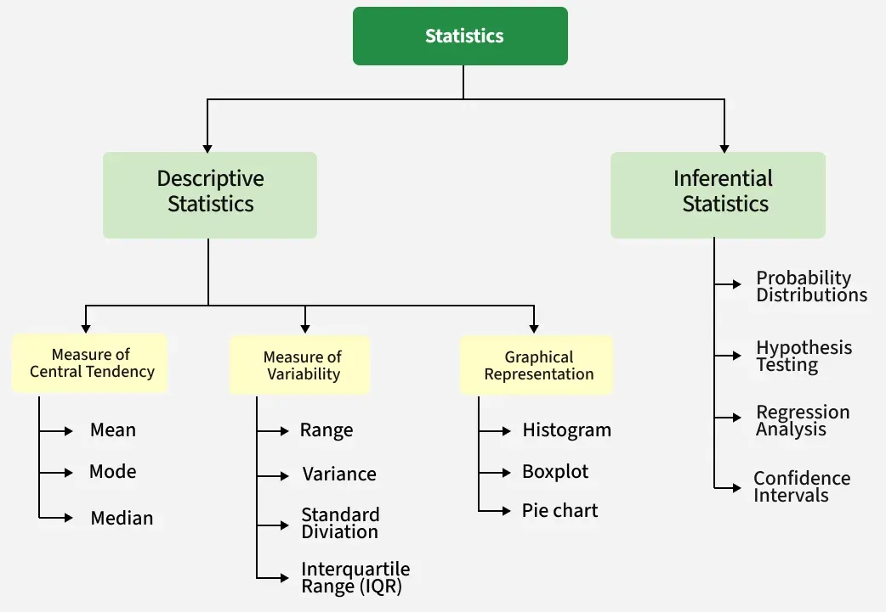
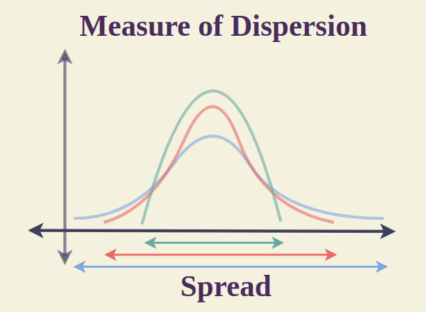
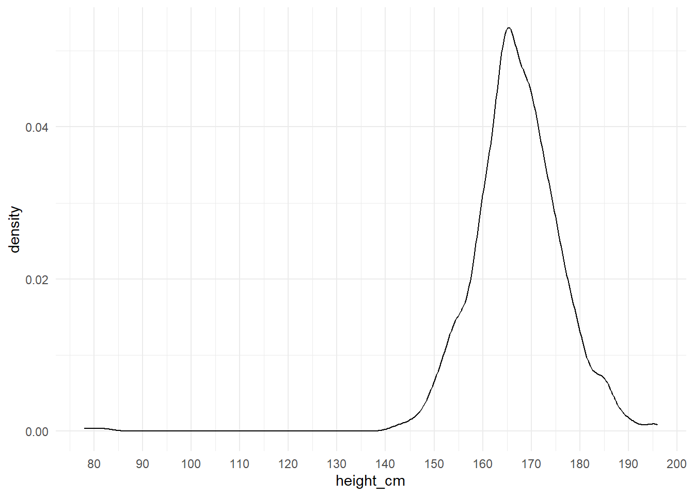
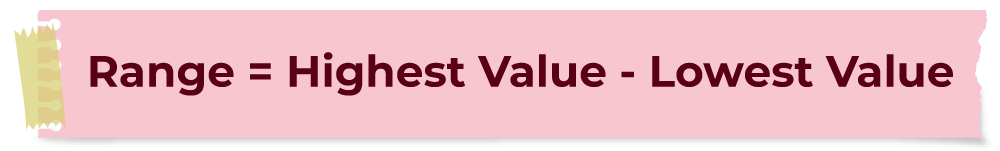
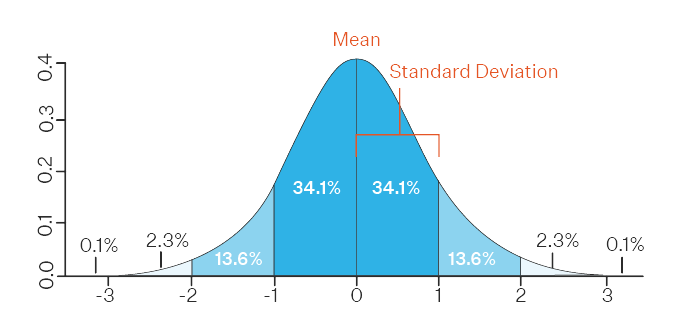
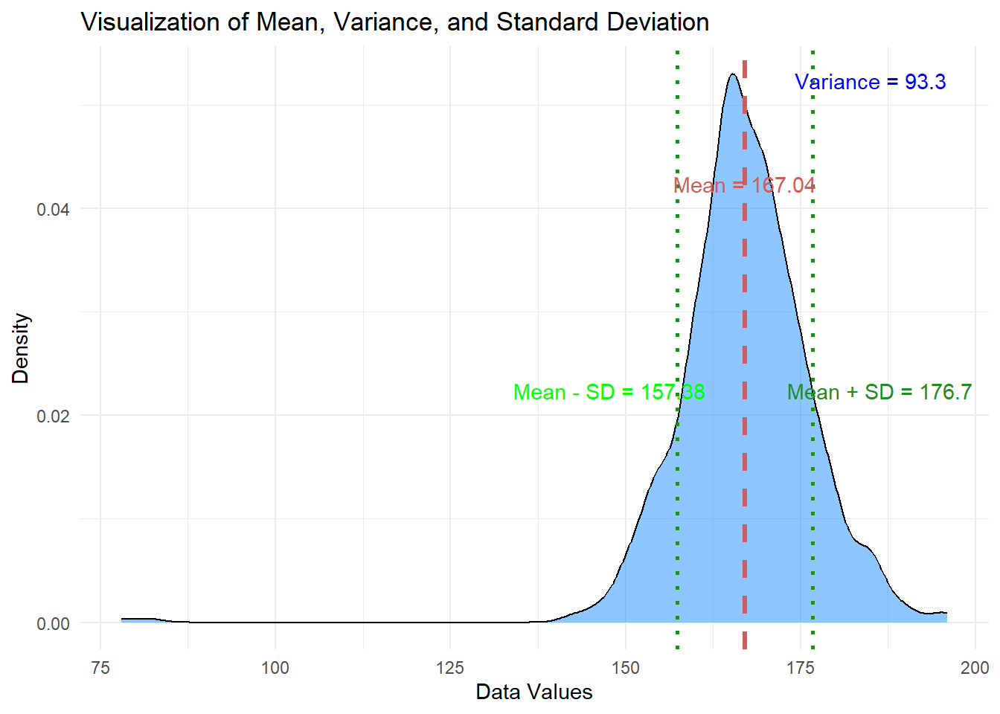

# Load packages
if(!require(pacman)) install.packages("pacman")
pacman::p_load(tidyverse,
here,
inspectdf)Measures of Dispersion
Introduction
Welcome back! Our journey into Descriptive Statistics continues with Measures of Dispersion.
These measures, which include the range, variance, and standard deviation, inform us about the extent to which our data is spread. R’s built-in statistical functions offer all we need to measure and understand dispersion in our data. Let’s dive right in!
Packages
This lesson will require the following packages to be installed and loaded:
The Yaounde COVID-19 dataset
In this lesson, we will again use the data from the COVID-19 serological survey conducted in Yaounde, Cameroon.
yaounde <- read_csv(here::here('data/yaounde_data.csv'))
# A smaller subset of numeric variables
yao <- yaounde %>%
filter(age_category_3 != "Child") %>%
select(age, sex, weight_kg, height_cm)
yao# A tibble: 680 × 4
age sex weight_kg height_cm
<dbl> <chr> <dbl> <dbl>
1 45 Female 95 169
2 55 Male 96 185
3 23 Male 74 180
4 20 Female 70 164
5 55 Female 67 147
6 28 Male 62 173
7 30 Male 73 170
8 62 Female 53 157
9 34 Female 78 164
10 38 Female 58 169
# ℹ 670 more rowsMeasures of Dispersion and Central Tendency
Both Measures of Dispersion and Central Tendency are numbers that are used to describe various parameters of continuous data. Let’s see the differences between Measures of Dispersion and Central Tendency.

In the last lesson on measures of central tendency, we found the mean value, median value, mode value, of the height variable in our yaounde dataset. We also created boxplots to visualize the maximum and minimum values of the height_cm variables, as well as the quartile ranges.
We can use the inspect_num() function from the {inspectdf} package to get a summary table of both measures of central tendency and dispersion of numeric variables in our dataset.
# Summarise central tendency and dispersion for numeric variables in the yao dataframe
yao %>% inspect_num()# A tibble: 3 × 10
col_name min q1 median mean q3 max sd pcnt_na hist
<chr> <dbl> <dbl> <dbl> <dbl> <dbl> <dbl> <dbl> <dbl> <named list>
1 age 18 25 33 36.9 46 79 14.7 0 <tibble [13 × 2]>
2 weight_kg 40 65 73 75.0 84 162 15.7 0 <tibble [25 × 2]>
3 height_cm 78 162 167 167. 172. 196 9.66 0 <tibble [25 × 2]>Measures of central tendency describe the “typical” or “average” person in our sample. The result of our analysis above tells us that the average adult was 167cm tall. This information gets us reasonably close to understanding the typical height of the patients surveyed. So a natural extension of our original question is: “How much like the average person are the other people in the data?”
The measures used to answer this question are called measures of dispersion, which we can say is the amount of difference between people in the study, or more generally, the amount of variability in the data.

In the last lesson we looked at dispersion visually, through charts such as boxplots and histograms. The density curve below gives us an idea of how values vary around the mean.
ggplot(yao, aes(height_cm)) +
geom_density(alpha = 0.1) +
scale_x_continuous(breaks = seq(70, 200, 10))
Measures of Dispersion allow us to mathematically quantify and measure the level of dispersion.
| Central Tendency | Measure of Dispersion |
|---|---|
| Central Tendency is used to quantify typical or most common properties of the data. | Measures of Dispersion are used to quantify the variability or spread of the data. |
The measures of Central tendency include: Mean Median Mode |
Common measures of dispersion are: Range Variance Standard Deviation |
Measures of Dispersion
Measures of Dispersion capture the spread within a dataset. For example, knowing the average height (a Measure of Centrality) isn’t enough. Understanding how those heights vary from the average provides a fuller picture. This enhanced comprehension is vital for daily data analysis.
Three common measures of dispersion used are the:
Range
Variance
Standard Deviation

Note
Measures of dispersion, also called measures of variability, “describe the extent to which the values of a variable are different.”
The most common measures of dispersion are range, variance, and standard deviation.
Range
Range is a very simple statistic, as it is simply the difference between the maximum and minimum values in the data.

Calculating Range in R
The range, simply the difference between the highest and lowest values, illustrates the spread between the extremes of our dataset. We can calculate the range of a set of numbers using R’s built-in function, range(). Here, we calculate the range of test heights for five students:
# Heights of patients from the Yaounde dataset
height_cm <- yao$height_cm
# Calculate and print the Range
range_heights <- diff(range(height_cm))
print(paste("Range of heights:", range_heights)) # Range of heights: 118[1] "Range of heights: 118"Range is not very useful from a statistical standpoint; because it relies only on the outermost values of a dataset, two datasets with the same range could still have drastic differences in their overall distribution.
Variance
Variance, another Measure of Dispersion, quantifies the degree to which data values differ from the mean. High variance signifies that data points are spread out, while low variance indicates closeness.
It is the average of the squared differences from the mean.
Variance shows how much the numbers in your data vary from the average value.
- If the variance is small, the numbers are close to the mean.
- If the variance is large, the numbers are more spread out.
How to Calculate Variance?
The steps to calculate the variance of a dataset:
Step 1: Calculate the Mean (Average):
Add up all the values in the dataset and divide by the total number of values. This gives you the mean (μ).
Mean (μ) = (Sum of All Values) / (Total Number of Values)Step 2: Find the Difference from the Mean
Subtract the mean from each value in the data set. This shows how far each value is from the average.
For each data value: \(x_i - \mu\)Step 3: Square Each Difference
Square the result from Step 2 to eliminate negative signs and give more weight to larger differences.
Squared Difference for Each Value = \((x_i - \mu)^2\)Step 4: Calculate the Average of the Squared Differences:
Add up all the squared differences calculated in the previous step, and then divide by the total number of values in the dataset. This gives you the variance (\(\sigma^2\)).
Variance (\(\sigma^2\)) = \(\frac{\sum_{i=1}^N (x_i - \mu)^2}{N}\)
Variance Formula
Therefore, the formula to calculate the variance of a dataset is as follows:
$ Variance (^2) = _{i=1}^N (X_i - )^2 $
Where:
- \(x_i\)is the ith Observation
- \(\mu\) is the mean (average)
- \(N\) is the Number of Observations
- \(\sum\) = Sum over all the values
This formula quantifies how spread out the data points are. The more spread out the data, the greater the variance compared to the average.
Calculating Variance in R
We can calculate the variance using R’s built-in var() function:
# Calculate and print the Variance
variance_heights <- var(height_cm)
print(paste("Variance of heights:", variance_heights)) # Variance of heights: 93.3[1] "Variance of heights: 93.2961426838777"The output helps us understand the level of variability from the average.
Standard Deviation
Rooted in Variance, the Standard Deviation is the square root of the Variance. It measures how much each data point differs from the mean or average.

A low Standard Deviation means values are close to the average, while a high standard deviation means values spread out over a wider range.
Calculating Standard Deviation in R
We can compute it using the sd() function available in R.
# Calculate and print the Standard Deviation
std_heights <- sd(height_cm)
print(paste("Standard deviation of heights:", std_heights)) # Standard deviation of heights: 18.8[1] "Standard deviation of heights: 9.65899284003657"Why is the standard deviation important when we already have variance? Compared to variance, the standard deviation is expressed in the same units as the data, making it easier to interpret. Additionally, the standard deviation is frequently used in statistical analysis because data within one standard deviation of the mean account for approximately 68% of the set, while data within two standard deviations cover around 95%. These percentages aid our understanding of data dispersion in a probability distribution. Therefore, while variance provides numerical insight into data spread, the standard deviation conveys these insights in a more comprehensible and applicable manner.
Variance Vs Standard Deviation
| Variance | Deviation (Standard Deviation) |
|---|---|
| The measure of spread in a dataset. | Measure of average distance from the mean. |
| Average of squared differences from the mean. | The square root of the variance. |
| \(\sigma^2\) (sigma squared) | \(\sigma\) (sigma) |
| Indicates the average squared deviation of data points from the mean. | Indicates the average distance of data points from the mean. |
| Harder to interpret directly (due to squared units) | Easier to interpret; shows how spread out the data is |

Variance measures the average of the squared differences from the Mean (μ). Variance is usually represented by the symbol σ2.
Visualizing Mean, Variance, and Standard Deviation Together
Here we create a density plot of height_cm, and overlay the mean, standard deviation, and variance on the plot.
# Calculate mean, variance, and standard deviation
mean_value <- mean(height_cm)
sd_value <- sd(height_cm)
# Calculate the variance
variance_value <- var(height_cm)
# Create the plot with variance annotation
ggplot(data.frame(height_cm), aes(x = height_cm)) +
geom_density(fill = "dodgerblue", alpha = 0.5) + # Density plot
geom_vline(aes(xintercept = mean_value), color = "indianred", linetype = "dashed", size = 1.2) + # Mean line
geom_vline(aes(xintercept = mean_value + sd_value), color = "forestgreen", linetype = "dotted", size = 1) + # SD line (right)
geom_vline(aes(xintercept = mean_value - sd_value), color = "forestgreen", linetype = "dotted", size = 1) + # SD line (left)
labs(title = "Visualization of Mean, Variance, and Standard Deviation",
x = "Data Values",
y = "Density") +
theme_minimal() +
annotate("text", x = mean_value, y = 0.04, label = paste("Mean =", round(mean_value, 2)), color = "indianred", vjust = -1) +
annotate("text", x = mean_value + 2*sd_value, y = 0.02, label = paste("Mean + SD =", round(mean_value + sd_value, 2)), color = "forestgreen", vjust = -1) +
annotate("text", x = mean_value - 2*sd_value, y = 0.02, label = paste("Mean - SD =", round(mean_value - sd_value, 2)), color = "green", vjust = -1) +
annotate("text", x = 185, y = 0.05, label = paste("Variance =", round(variance_value, 2)), color = "blue", vjust = -1)
Conclusion
Great job! You’ve just dived into Measures of Dispersion with R! These skills will assist you in better interpreting and visualizing data. Most importantly, the standard deviation is a crucial statistical measure that provides valuable information about the variability or dispersion of data within a dataset. It helps us understand how spread out the data points are from the mean, offering a clearer picture of the data’s consistency and reliability. It is widely used in various fields, including statistics, finance, and science, to understand the distribution of data and make informed decisions based on the level of variability present.
Contributors
The following team members contributed to this lesson:

JOY VAZ
Loves doing science and teaching science

KENE DAVID NWOSU
Passionate about world improvement
References
- TBA
This work is licensed under the Creative Commons Attribution Share Alike license.